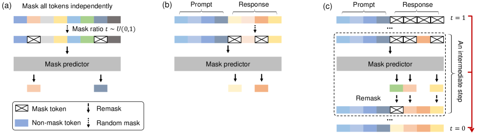

发展脉络
现代架构围绕三个瓶颈演进：注意力的长度复杂度、稀疏专家的计算/通信、以及多模态和状态空间的统一表示。
自回归像「逐字写文章」，扩散语言模型（dLLM）像「先涂满再逐步擦干净」——从掩码噪声里并行还原整句。它改变的是似然分解方式本身，后果是权重不可复用、KV Cache 语义失效、困惑度不可直接比。这条路线 2026 年已有一款商用产品，但距离统治地位还很远。
扩散语言模型与自回归的根本差异在「生成顺序」：自回归只能从左到右一个 token 一个 token 生成（严格因果）；扩散语言模型从「全掩码噪声」出发，每一轮并行地「擦除」一部分掩码、填入更确定的 token，经过多轮去噪得到完整句子——一次生成多个 token，天然并行。
扩散语言模型把「生成」建模为「去噪」：训练时，随机把序列的一部分 token 替换成 [MASK]；模型学习预测被掩码位置的原始 token——即「从部分可见文本推断被隐藏内容」。生成时，从全 [MASK] 开始，每轮用模型预测高置信位置并固定，再重新掩码低置信位置继续去噪，迭代 $T$ 轮得到最终序列。
$$\text{训练:}\ \mathcal{L} = -\log p_\theta(x_{\bar{m}} \mid x_{m}), \quad \text{生成:}\ x^{(0)} \to x^{(1)} \to \dots \to x^{(T)}$$
与图像扩散的「连续噪声」不同，文本是离散 token，主流实现用「离散掩码扩散」（masked diffusion）：噪声是 [MASK] 符号，去噪是「填词」。LLaDA 系列走的正是这条路线，训练目标本质上是一个「掩码语言模型目标」的推广——这让它与 BERT 式的填空任务同源，但生成路径完全不同。
掩码扩散这条路线最权威的「一图流」，来自提出 LLaDA 的论文《Large Language Diffusion Models》的 Figure 2。它把训练、指令微调、采样三个阶段画在同一张图里，正好覆盖本节要讲的全部机制：

这张图是三段连读的。看图 (a)：输入的是一行「我 爱 你」之类的文本，旁边画了一个从 0 到 1 的坐标轴——预训练时先按均匀分布随机采样一个掩码率 $t$，再独立地按比例 $t$ 把每个位置随机掩掉。注意图里的关键细节「同一句文本，不同的 t 对应不同的掩码结果」——这就是前面讲的「掩码率是一条 0 到 1 的谱」在训练里的落地。看图 (b)：指令微调阶段，只有「回复」部分的 token 可能被掩码，「用户提问」部分保持完整——因为 SFT 的目的就是学「看到问题该怎么答」，问题本身不该被藏起来。看图 (c)：采样阶段从最左边的全掩码（t=1）出发，每一轮模型对所有掩码位置同时给出预测，按置信度固定一批（图上箭头逐步变稀疏），直到 t=0 全部揭晓——这就是「并行生成」的视觉证明。
把这张图和前面 Mermaid 概览图对着看：Mermaid 画的是「自回归 vs 扩散」的路线差异，这张论文原图画的是「扩散路线内部」三阶段的完整生命周期。两者互补——前者回答「和自回归哪里不一样」，后者回答「扩散模型自己到底怎么训练、怎么生成」。这张图里最容易被新手忽略但最关键的，还是那句「掩码率 t 均匀采样」：它是 LLaDA 与 BERT 的本质分界（BERT 固定 15%），也是扩散模型「从全掩码生成」成为可能的前提。
这是初学者最容易滑过、却决定成败的一个细节。BERT 式的掩码语言模型训练时用的是一个固定的小掩码率（经典设置是 15%）——模型永远只见过「大部分词都在、只缺零星几个」的场景。所以 BERT 会填空，但它不是一个生成模型：你给它一整句 [MASK]，它从没见过这种输入分布，填出来的东西会崩掉。
掩码扩散把掩码率变成了一个随机变量：每个训练样本先采样一个噪声水平 $t \in (0, 1]$，再按比例 $t$ 随机掩掉 token。于是模型在训练中见过「掩掉 3%」「掩掉 50%」「掩掉 99%」的所有情形。生成时从 $t = 1$（全掩码）一路走到 $t \to 0$（全确定），每一个中间状态都落在训练分布之内——这才是它能当生成器用的原因。实现上通常还会按当轮掩码比例对损失做加权，让不同噪声水平对梯度的贡献保持均衡（具体权重形式以各论文的实现为准）。
把这一点放进三种目标的对照里看得最清楚：
| 维度 | 自回归 CLM（GPT） | 掩码语言模型（BERT） | 掩码扩散（dLLM） |
|---|---|---|---|
| 掩码 / 可见范围 | 只看左侧前缀 | 看双向上下文，固定掩 15% | 看双向上下文，掩码率 $t$ 从 0 到 1 全谱 |
| 是否完整似然模型 | 是（链式法则严格分解） | 否（只是表示学习目标） | 是（对全谱噪声水平取期望） |
| 能否直接生成 | 能，逐 token 采样 | 不能，全掩码输入超出训练分布 | 能，从全掩码迭代去噪 |
| 主要用途 | 生成、对话、推理 | 句向量、分类、抽取 | 并行生成、可控填充 |
| 典型代表 | GPT / Llama / Qwen | BERT / RoBERTa | LLaDA / Dream / Mercury |
这是编排本节的关键判据，值得写清：扩散语言模型改变的是似然分解方式本身，后果是三条权重级不兼容：
| 不兼容点 | 自回归 | 扩散语言模型 |
|---|---|---|
| 似然分解 | p(x₁)...p(xₙ|x₋ₙ) | p(x_m̄|x_m)（掩码条件） |
| 权重 | 因果注意力 | 双向注意力（BERT 式） |
| KV Cache | 前缀复用核心 | 无前缀概念，语义失效 |
| 困惑度 | 直接可算可比 | 计算方式不同，不可直接比 |
| 生成速度 | 串行（1 token/步） | 并行（每轮多个 token） |
自回归的 KV Cache 之所以能省算力，靠的是因果性：第 $t$ 个位置的注意力只依赖 $1..t$，所以前缀的 K/V 一旦算过就永远有效、可以直接复用。扩散 LLM 用双向（非因果）注意力——每个位置的表示都依赖整句（包括尚未确定的位置）。
问题来了：在生成过程中，被固定的 token 会越来越多、被重采样的位置会变化，任何一个位置的上下文都在随轮次改变。这意味着上一轮为某位置缓存的 K/V，到下一轮已经"对不上"新的全局上下文——前缀不再稳定，缓存的复用前提崩塌。因此自回归那套"缓存前缀、增量查询"的推理加速技术无法直接套用，必须重新设计（例如每轮整体重算，或用近似的块级缓存）。这正是扩散 LLM 推理栈"生态缺失"的深层技术原因之一。
反过来，扩散 LLM 的并行生成本身就是一种加速——它用"多轮、每轮少量前向"换"少步数"，和自回归"多步、每步一次前向"是两种完全不同的加速范式，二者很难共用同一套 KV Cache 基础设施。
扩散语言模型的生成质量取决于「每轮填哪些位置」——这就是置信度调度。最朴素的策略是每轮把所有位置都重采样一遍（DDPM 式）；更高效的策略是先填高置信位置，因为高置信 token 一旦确定，就为后续去噪提供了强上下文。
把单轮去噪的"预测 → 排序 → 固定 → 重采样"画成时序图，能看清并行从哪来：
调度策略的工程权衡：
自回归模型生成 $L$ 个 token 就要 $L$ 次前向，这是硬性的。扩散语言模型的前向次数是去噪步数 $T$，而 $T$ 可以由你自己定——这才是它「快」的来源，也是它「不稳」的来源。理解这一点，需要先看清并行解码在数学上偷了什么懒。
模型一次前向给出的，是每个待定位置各自的边缘分布 $p(x_i \mid c)$，其中 $c$ 表示当前已经确定下来的那些 token。当你在一轮里同时揭晓 $k$ 个位置时，实际上是把它们当作条件独立来采样的：用 $\prod_i p(x_i \mid c)$ 近似了真实的联合分布 $p(x_{i_1}, \dots, x_{i_k} \mid c)$。可这两者并不相等。举个极端例子：句子「我今天要去 ___ ___」，两个空位的边缘分布可能都很自然（第一个空「北」「上」都行，第二个空「京」「海」都行），但同时独立采样就可能得到「北海」这种前后不搭的组合。一轮里揭晓的位置越多，这种「各自都合理、拼起来不合理」的错误就越多。
所以步数 $T$ 是一个非常直白的旋钮：
| 步数设置 | 每轮揭晓 token 数 | 与自回归相比的前向次数 | 质量表现 | 典型用途 |
|---|---|---|---|---|
| $T = L$（每轮 1 个） | 1 | 相当（无加速） | 最好——条件独立假设几乎不被用到 | 质量基线、调试对照 |
| $T = L/4 \sim L/8$ | 数个 | 快数倍 | 通常仍可接受 | 实际部署常用区间 |
| $T$ 很小（如个位数） | 数十个 | 快一个量级 | 明显退化，易出现前后矛盾、重复、断句错乱 | 只适合短文本、格式高度受限的输出 |
| 自适应步数 | 随置信度动态变化 | 介于两者之间 | 好于固定小步数 | 工程上更推荐的折中 |
注：上表刻画的是趋势而非具体分数。不同模型、不同任务的可用步数区间差别很大，请以目标模型的官方评测或自己的实测曲线为准。
纯扩散有两个绕不过去的痛点：一是上面说的条件独立误差，二是KV Cache 完全用不上。工程界很自然地想到一个折中：把序列切成若干块，块与块之间保持自回归（从左到右一块一块生成），块内部用扩散并行去噪。这条路线通常被称为「半自回归解码」或「块扩散」。
这么做的好处非常实际：
代价是并行度下降：块越小越像自回归，块越大越像纯扩散。块大小成了新的旋钮，和步数一起构成了这条路线的调参空间。可以这样理解整个谱系：块大小 = 1 就退化成自回归，块大小 = 整个序列就回到纯扩散，中间地带才是当前多数商用实现的落点。
| 维度 | 自回归 | 扩散语言模型 | 2026 年现状 |
|---|---|---|---|
| 生成并行度 | 低（串行） | 高（多 token/轮） | 扩散胜 |
| 生态成熟度 | 极高 | 极低 | 自回归碾压 |
| 长文本能力 | 成熟（128K+） | 弱（仍难） | 自回归胜 |
| 可控生成 | 需技巧 | 天然支持 | 扩散胜 |
| 工具 / 推理栈 | 成熟 | 稀少 | 自回归胜 |
自回归模型的困惑度（PPL）定义为 $\exp(-\frac{1}{n}\sum_t \log p(x_t\mid x_{
评估扩散 LLM 更务实的做法是直接用任务指标：在同样的下游基准（MMLU、GSM8K、HumanEval 等）上跑零样本/少样本，比较准确率；对生成质量用基于模型的评判（如 LLM-as-judge）或 n-gram 重叠（BLEU/ROUGE）配合人工抽检。和同规模自回归比下游分数，而不是比 PPL，才是公平的对照方式。另外，扩散 LLM 的"生成步数"是个新超参——评估时要固定步数或报告"质量-步数"曲线，否则无法公平比较。
这也是为什么行业里谈扩散 LLM 时，常强调"同等算力下质量"或"同等质量下速度"，而不是单看一个似然数字。
把概念落到代码，最能看清掩码扩散与自回归的差异。核心就三步：随机掩码 → 模型预测 → 只在掩码位置算损失。
import torch
import torch.nn as nn
class MaskedDiffusionTrainer:
"""掩码扩散语言模型的训练骨架（示意）
与自回归的关键差异：
1. 输入是「随机掩码后的序列」（非因果，可双向看）
2. 损失只在被掩码的位置计算
3. 生成时从全掩码迭代去噪（而非从左到右）
"""
def __init__(self, model, tokenizer, mask_token_id=100):
self.model = model # 双向 Transformer（BERT 式）
self.tokenizer = tokenizer
self.mask_token_id = mask_token_id
def forward_loss(self, input_ids, mask_prob=0.3):
"""训练一步：随机掩码 + 预测被掩位置
Args:
input_ids: [batch, seq_len] 原始序列
mask_prob: 掩码比例
"""
batch, seq = input_ids.shape
# 1. 随机选择要掩码的位置
mask = torch.rand(batch, seq) < mask_prob
# 2. 构造掩码后的输入
masked_input = input_ids.clone()
masked_input[mask] = self.mask_token_id
# 3. 前向：双向注意力（无因果掩码）
logits = self.model(masked_input) # [batch, seq, vocab]
# 4. 只在掩码位置计算交叉熵
loss_fn = nn.CrossEntropyLoss()
loss = loss_fn(
logits[mask],
input_ids[mask]
)
return loss
@torch.no_grad()
def generate(self, seq_len=32, num_steps=8, top_ratio=0.5):
"""从全掩码迭代去噪生成
Args:
seq_len: 生成序列长度
num_steps: 去噪轮数
top_ratio: 每轮固定的最高置信比例
"""
device = next(self.model.parameters()).device
# 1. 全掩码起点
tokens = torch.full(
(1, seq_len), self.mask_token_id,
device=device
)
for step in range(num_steps):
logits = self.model(tokens) # [1, seq, vocab]
probs = torch.softmax(logits, dim=-1)
# 每位置最高概率及其 token
max_probs, pred_tokens = probs.max(dim=-1)
# 仍处于掩码状态的位置
still_masked = (tokens == self.mask_token_id)
# 高置信位置直接固定
k = int(still_masked.sum() * top_ratio)
if k == 0:
break
# 取置信度最高的 k 个位置
conf_scores = max_probs.masked_fill(
~still_masked, -1e9)
_, top_idx = conf_scores.topk(k)
tokens[0, top_idx] = pred_tokens[0, top_idx]
return self.tokenizer.decode(tokens[0])上面整段生成里"一轮该固定哪些位置"的逻辑，单独抽出来就是一个清晰的去噪步进函数——它也是并行加速的关键：
@torch.no_grad()
def denoise_step(model, tokens, mask_id=100, ratio=0.5):
# 单轮去噪：一次前向产出整句所有位置的分布，固定最确定的 Top-k%
probs = torch.softmax(model(tokens), dim=-1) # [1, seq, vocab]
max_p, pred = probs.max(dim=-1) # 每位置最高概率与 token
masked = (tokens == mask_id) # 仍待去噪的位置
k = max(1, int(masked.sum() * ratio)) # 本轮要固定的数量
scores = max_p.masked_fill(~masked, float('-inf')) # 只从掩码位置里选
_, idx = scores.topk(k)
out = tokens.clone()
out[0, idx] = pred[0, idx] # 揭晓这批 token
return out # 未选中的继续保留 [MASK]生成循环本身是一个"预测 → 固定 → 检查"的状态机，用状态图表示最贴切：
扩散语言模型的名字来自图像扩散（如 Stable Diffusion），但两者在实现上有本质差异。理解对照关系，能避免把图像扩散的直觉错误套用到文本上。
| 维度 | 图像扩散 | 文本掩码扩散 |
|---|---|---|
| 数据空间 | 连续像素 | 离散 token |
| 噪声类型 | 高斯噪声（连续） | [MASK] 符号（离散） |
| 目标函数 | 预测噪声 ε | 预测被掩 token |
| 去噪步数 | 数百-上千 | 数十-数百 |
| 每步输出 | 一张图的全像素 | 整句所有 token |
谈这条路线最容易走两个极端：一边是「非自回归即将颠覆一切」的过度乐观，一边是「不过是学术玩具」的一笔带过。两个说法都不对。要把成熟度讲准，只需要钉死两条事实。
第二条事实比第一条更能说明问题：截至目前，所有具备长思维链能力的推理模型，无一例外都是自回归的。o 系列、R1、以及各家的 thinking 模式，没有一个建立在扩散解码上。这不是巧合，背后有结构性原因：
所以更准确的定位是：扩散语言模型目前在「快」这个维度上有真实产品，在「强」这个维度上还没有代表作。它争夺的是「够用且要快」的那一段市场，而不是能力天花板。
把当前有代表性的五条路线摆在一起看，能看出这个领域的分工：学术侧负责证明可行性并开源权重，商业侧负责把速度优势变成产品，大厂侧负责探索它在自家体系里的位置。
| 项目 | 阵营 | 路线特征 | 开放程度 | 它证明了什么 |
|---|---|---|---|---|
| LLaDA | 学术开源 | 纯掩码扩散，从零预训练 | 开放权重 | 纯扩散路线在中等规模上能达到「可用」质量，不是玩具 |
| LLaDA 2.0 | 学术开源（后续迭代） | 延续掩码扩散，规模与训练配方升级 | 开放权重（具体规模与许可以官方发布为准） | 这条路线可以持续迭代、能吃到规模红利，而不是一次性成果 |
| Mercury / Mercury 2 | 商业闭源（Inception Labs） | 扩散并行解码，主打低延迟 | API / 产品形态 | 扩散语言模型可以做成真实付费产品，速度优势能变现 |
| Gemini Diffusion | 大厂实验（Google） | 扩散生成的实验性模型 | 闭源，实验性发布 | 头部厂商在认真评估这条路线，而不是完全无视 |
| Dream | 学术开源 | 扩散语言模型，探索从已有模型初始化等训练技巧 | 开放权重 | 训练成本可以通过初始化策略部分压低，入场费不是完全不可谈 |
注：本表刻画的是路线定位而非性能排名。各项目的具体规模、许可证、评测分数请以官方发布为准；这一领域迭代很快，读到本页时格局可能已有变化。
务实判断：扩散语言模型在「生成并行性」和「可控生成」上有结构性优势，但受制于「权重不可复用」和「生态缺失」。合理预期是：在特定垂直场景（需要低延迟、需要可控编辑与填充、输出长度可控的结构化生成）落地，而不会在通用场景替代自回归。真正值得关注的转折信号有三个——出现第一个基于扩散解码的强推理模型、出现能稳定处理数万 token 长上下文的扩散基座、出现能把自回归权重迁移到扩散目标的有效方法。这三条任何一条被跨过，上面的判断都需要重写。
2025-2026 年扩散 LLM 从论文走向产品，三条有代表性的力量是：学术开源的 LLaDA、商用的 Mercury（Inception Labs）、以及大厂实验性的 Gemini Diffusion（Google）。它们的工程形态不同，但与自回归的本质差异完全一致——都放弃了因果注意力、改为并行去噪，因此都不能加载自回归权重、都要从零预训练、推理都不靠 KV Cache 前缀复用。
| 维度 | LLaDA | Mercury（Inception Labs） | Gemini Diffusion（Google） |
|---|---|---|---|
| 定位 | 开源学术模型，验证纯扩散路线 | 商用扩散 LLM，主打低延迟 | 大厂实验性扩散模型 |
| 方法 | 掩码扩散（离散） | 扩散生成（并行解码） | 扩散生成（实验路线） |
| 权重/开源 | 开放权重（如 8B） | 闭源、API/产品形态 | 闭源、实验性发布 |
| 核心卖点 | 证明纯扩散可达可用质量 | 生成吞吐显著高于同规模自回归 | 展示大厂对并行生成路线的探索 |
| 与自回归本质差异 | 非因果/双向注意力；并行多 token 生成；必须从头预训练；KV Cache 前缀语义失效；困惑度不可直接对比 | ||
把"与自回归的本质差异"单列出来看更清楚——无论哪家，扩散 LLM 都在同一个坐标系里对抗自回归：
所以"LLaDA vs Mercury vs Gemini Diffusion"的竞争，表面是产品之争，底层是同一套并行生成范式在与自回归生态的体系化差距——谁先在工具链和长上下文上补齐短板，谁才可能在通用场景真正撬动自回归的地位。
抛开路线之争，落到具体项目上只有一个问题：我这个场景，值不值得为扩散语言模型付出「换一套推理栈」的代价？下面这张决策表把常见场景过一遍。
| 场景 | 是否值得考虑 dLLM | 理由 |
|---|---|---|
| 通用对话助手 | 不建议 | 质量是第一位的，自回归生态在质量、工具调用、长上下文上全面领先 |
| 复杂推理 / 数学 / 竞赛代码 | 不建议 | 长思维链依赖串行推导，并行去噪的条件独立假设在这里最吃亏 |
| 短文本、低延迟、高并发（如自动补全、翻译片段、实时改写） | 值得试 | 输出短、质量要求不极端，并行解码的速度优势能直接兑现为体验 |
| 代码 / 文本的中间填充（infilling） | 值得试 | 双向上下文是天然优势，不需要像自回归那样靠 FIM 训练目标绕一圈 |
| 需要「锁定部分内容、只重写其余部分」的可控编辑 | 值得试 | 把已定内容当作永不掩码的位置即可，机制上天然支持 |
| 超长文档生成（数万 token） | 暂不建议 | 长序列是当前明确短板，且需要先确定生成长度这一点很别扭 |
| Agent / 多轮工具调用 | 暂不建议 | 依赖成熟的结构化输出、约束解码与工具生态，这些在 dLLM 侧基本空白 |
如果决定试，有三条落地前必须确认的事：① 你的推理栈能不能接受「没有 KV Cache 前缀复用」这一前提——如果你的业务大量依赖系统提示词的前缀缓存来省钱（见 推理成本工程），换到 dLLM 后这部分收益会直接消失；② 你的评测集能不能画出「质量 - 步数」曲线，否则你无法判断线上该用几步；③ 输出长度是否可以预先估计或分块生成，否则纯扩散那套「先铺一条固定长度的掩码序列」的做法会很难用。
本章关注 Transformer 之后的架构选择：稀疏专家、线性/状态空间模型、长上下文、多模态和扩散语言模型。重点是理解每种方法改变了哪一层约束。
阅读提示：比较新架构时同时看训练目标、权重兼容性、推理状态和硬件实现；只看理论复杂度很容易得出错误结论。
MoE 路由、容量因子和负载均衡的经典介绍，适合建立稀疏激活的共同语言。
选择性状态空间模型的代表作，解释线性扫描、选择机制和长序列效率之间的关系。
用较少 KV 头降低推理带宽和缓存开销，是理解 MQA/GQA 工程取舍的直接来源。
ViT 将图像 patch 化并交给 Transformer，帮助理解多模态视觉编码器的基本范式。
以 LLaDA 为代表的扩散语言模型工作，适合和自回归模型对照并识别当前研究边界。
资料优先选用原始论文、官方文档、大学课程和公共机构材料；链接按 2026-08-10 检索，具体版本以来源页面为准。
现代架构围绕三个瓶颈演进：注意力的长度复杂度、稀疏专家的计算/通信、以及多模态和状态空间的统一表示。
比较架构时固定记录参数量、激活参数量、路由粒度、通信模式、缓存语义和训练目标，避免只按模型名称或榜单排序。
稀疏化通常以路由不均衡和通信换取 FLOP 节省；长上下文和多模态则会把瓶颈转移到数据、显存或对齐层。
MoE、线性/混合注意力、视觉语言模型和扩散语言模型仍处于快速演进期，应明确哪些结论已稳定、哪些只在特定规模成立。
能解释掩码扩散的前向破坏、去噪目标和并行解码调度，并与自回归生成的因果约束逐项比较。
先修 Transformer 架构、注意力和基本张量 shape；建议同时打开对应的架构图核对数据流。
在 8 token 玩具序列上实现线性 mask schedule、随机破坏和交叉熵去噪；分别按随机、置信度优先两种策略迭代 8 步，记录每步掩码数和预测变化。
训练标签只覆盖被掩码位置，最终无 mask token 残留；两种调度均可复现，且报告每轮并行更新数、总模型调用次数和错误传播案例。